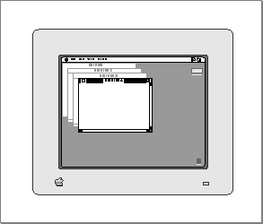
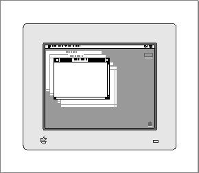
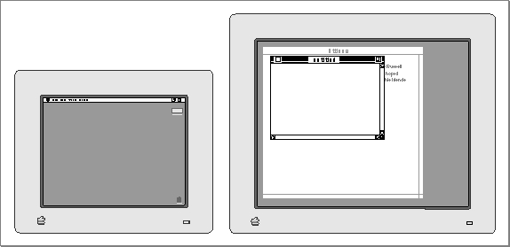

Creating a Window
You typically specify the characteristics of your windows--such as their initial size, location, title, and type--in window ('WIND') resources. Once you have defined your window resources, you can call the functionGetNewCWindow(orGetNewWindow) to create windows.Defining a Window Resource
You typically define a window resource for each type of window that your application creates. If, for example, your application creates both document windows and special-purpose windows, you would probably define two window resources. Defining your windows in window resources lets you localize your window titles for different languages by changing only the window resources. (You specify the characteristics of alert boxes and dialog boxes with the alert and dialog resources, described in the chapter "Dialog Manager" in this book.)Listing 4-2 shows a window resource, in Rez input format, that an application might use to create a document window. The resource specifies the attributes for windows created from the resource of type
'WIND'with resource ID 128. The system software loads the resource into memory immediately after opening the resource file, and the Memory Manager can purge the memory occupied by the resource.Listing 4-2 Rez input for a window (
'WIND') resource for a document window#define rDocWindow 128 resource 'WIND' (rDocWindow, preload, purgeable) { {64, 60, 314, 460}, /*initial window size and location*/ zoomDocProc, /*window definition ID: */ /* incorporates definition function */ /* and variation code*/ invisible, /*window is initially invisible*/ goAway, /*window has close box*/ 0x0, /*reference constant*/ "untitled", /*window title*/ staggerParentWindowScreen /*optional positioning specification*/ };The four numbers in the first element of this resource specify the upper-left and lower- right corners, in global coordinates, of a rectangle that defines the initial size and placement of the window's content region. Your application can change this rectangle before displaying the window, either programmatically or through an optional positioning code described later in this section. When specifying a window's position on the desktop, remember to leave room for the window's frame and, on the main screen, for the menu bar.The second element contains the window's definition ID, which specifies both the window definition function that will handle the window and an optional variation code that defines a window type. If you are using one of the standard window types (described in "Types of Windows" beginning on page 4-7), you need to specify only one of the window-type constants listed in "The Window Resource" beginning on page 4-124.
The third element in the window resource specifies whether the window is initially visible or invisible. This element determines only whether the Window Manager displays the window when it first creates it, not whether the window can be seen on the screen. (A window entirely covered by other windows, for example, might be "visible," even though the user cannot see it.) You typically create new windows in an invisible state, build the content area of the window, and then display the completed window by calling
ShowWindowto make it visible.The fourth element in the window resource specifies whether the window has a close box. Only some of the standard window types (
zoomDocProc,noGrowDocProc,documentProc,zoomNoGrow, andrDocProc) support close boxes. The close-box element has no effect if the second field of the resource specifies a window type that does not support a close box. The Window Manager draws the close box when it draws the window frame.The fifth element in the window resource is a reference constant, in which your application can store whatever data it needs. When it builds a new window record, the Window Manager stores in the
refConfield whatever value you specify here. You can also put a placeholder here (such as0x0, in this example) and then set therefConfield yourself by calling theSetWRefConprocedure.The sixth element in the window resource is a string that specifies the window title.
The optional seventh element in the window resource specifies a positioning rule that overrides the window position specified by the rectangle in the first element. In the window resource for a document window, you typically specify the positioning constant
staggerParentWindowScreen. For a complete list of the positioning constants and their effects, see "The Window Resource" beginning on page 4-124.The positioning constants are convenient when the user is creating a new document or when you're handling your own dialog boxes and alert boxes. When you're creating a new window to display a previously saved document, however, the new window should appear, if possible, in the same rectangle as the previous window (that is, the window used during the last save). For the rules of window placement, see "Positioning a Document Window on the Desktop" beginning on page 4-27.
Use the function
GetNewCWindoworGetNewWindowto create a window from a'WIND'resource.Creating a Window From a Resource
You typically create a new window every time the user creates a new document, opens a previously saved document, or issues a command that triggers a dialog box.You create document windows from a window resource using the function
GetNewCWindoworGetNewWindow. (Whenever Color QuickDraw is available, useGetNewCWindowto create color windows, whether or not a color monitor is currently installed. A color window record is the same size as a window record, andGetNewCWindowreturns a pointer of typeWindowPtr, so most code can handle color windows and monochrome windows identically.)You can allow
GetNewCWindowto allocate the memory for your window record. You can maintain more control over memory use, however, by allocating the memory yourself from a block allocated for such purposes during your own initialization routine, and then passing the pointer toGetNewCWindow.You typically create the scroll bars from control (
'CNTL') resources at the time that you create a document window and then display them when you make the window visible.Listing 4-3 illustrates an application-defined procedure,
DoNewCmd, which SurfWriter calls when the user chooses New from the File menu. Windows are typically invisible when created and displayed only after all elements are in place.Listing 4-3 Creating a new window
PROCEDURE DoNewCmd (newDocument: Boolean; VAR window: WindowPtr); VAR myData: MyDocRecHnd; {the document's data record} windStorage: Ptr; {memory for window record} destRect, {rectangles for creating } viewRect: Rect; { TextEdit edit record} good: Boolean; {success flag} BEGIN window := NIL; {no window created yet} good := FALSE; {no success yet} {allocate memory for window record from previously allocated block} windStorage := MyPtrAllocationProc; IF windStorage <> NIL THEN {memory allocation succeeded} BEGIN {create window} IF gColorQDAvailable THEN window := GetNewCWindow(rDocWindow, windStorage, WindowPtr(-1)) ELSE window := GetNewWindow(rDocWindow, windStorage, WindowPtr(-1)); END; {create document record} myData := MyDocRecHnd(NewHandle(SIZEOF(MyDocRec))); IF (window <> NIL) AND (myData <> NIL) THEN {window record and document } BEGIN { record both allocated} SetPort(window); {set current port} HLock(Handle(myData)); {lock handle to doc record} SetWRefCon(window, LongInt(myData)); {link document record to window} WITH window^, myData^^ DO {fill in document record} BEGIN MyGetTERect(window, viewRect); {set up a viewRect for TextEdit} destRect := viewRect; destRect.right := destRect.left + kMaxDocWidth; editRec := TENew(destRect, viewRect); IF editRec <> NIL THEN {it's a good edit record} BEGIN good := TRUE; {set success flag} MyAdjustViewRect(editRec); {set up edit record} TEAutoView(TRUE, editRec); END ELSE good := FALSE; {clear success flag} IF good THEN BEGIN {create scroll bars} vScrollBar := GetNewControl(rVScroll, window); hScrollBar := GetNewControl(rHScroll, window); good := (vScrollBar <> NIL) AND (hScrollBar <> NIL); END; IF good THEN {it's a good document} BEGIN MyAdjustScrollBars(window, FALSE); {adjust scroll bars} fileRefNum := 0; {no file yet} windowDirty := FALSE; {no changes yet} IF newDocument THEN {if it's a new (empty) document, } ShowWindow(window); { make it visible} END; END; {end of WITH statement} HUnlock(Handle(myData)); {unlock document record} END; {end of IF (window <> NIL) AND (myData <> NIL)} IF NOT good THEN BEGIN IF windStorage <> NIL THEN {memory for window record was allocated} DisposePtr(windStorage); {dispose of it} IF myData <> NIL THEN {memory for document record was allocated} BEGIN IF myData^^.editRec <> NIL THEN {edit record was allocated} TEDispose(myData^^.editRec); {dispose of it} DisposeHandle(Handle(myData)); {dispose of document record} END; IF window <> NIL THEN {window pointer exists, but it's invalid} CloseWindow(window); {clean up window pointer} window := NIL; {set window to NIL to indicate failure} END; END; {DoNewCmd}TheDoNewCmdprocedure first sets the window pointer and success flags to show
that a valid window doesn't yet exist. Then it calls the application-defined functionMyPtrAllocationProc, which allocates memory for a window record from a block
set aside during program initialization for that purpose. IfMyPtrAllocationProcsuccessfully allocates memory and returns a valid pointer,DoNewCmdcreates a window, specifying the'WIND'resource with resource ID 128, as specified by the constantrDocWindow. Using this window resource (defined in Listing 4-2 on page 4-22), the Window Manager creates an invisible window of typezoomDocProc. Because
thebehindparameter toGetNewCWindoworGetNewWindowhas the valueWindowPtr(-1), the Window Manager places the new window in front of all others
on the desktop.The
DoNewCmdprocedure then creates a document record. It locks the document record in memory while manipulating it, sets therefConfield in the window record so that it points to the document record, and fills in the document record. While filling in the document record,DoNewCmdsets up a TextEdit record to hold the user's data. If that succeeds,DoNewCmdsets up horizontal and vertical scroll bars. If that succeeds,DoNewCmdadjusts the scroll bars (see the chapter "Control Manager" in this book for the application-defined procedureMyAdjustScrollbars) and fills in the remaining parts of the document record. If the window is being created to display a new document, that is, if no user data needs to be read from a disk,DoNewCmdcalls theShowWindowprocedure to make the window visible immediately.If your window resource specifies that a new window is visible,
GetNewCWindowdisplays the window immediately. If you're creating a document window, however, you're more likely to create the window in an invisible state and then make it visible when you're ready to display it.
- If you're creating a window because the user is creating a new document, you can display the window immediately by calling the procedure
ShowWindowto make the window frame visible. This change in visibility adds to the update region and triggers an update event. Your application then invokes its own procedure for drawing the content region in response to the update event.- If you're creating a new window to display a saved document, you must retrieve the user's data before displaying it. (See Inside Macintosh: Files for information about reading saved files.) If possible, the size and location of the window that displays the document should be the same as when the document was last saved. (See the next section, "Positioning a Document Window on the Desktop," for a discussion of window placement.) Once you have positioned the window and set up its content region, you can make the window visible by calling
ShowWindow, which triggers an update event. Your application then invokes its own procedure for drawing the content region.Positioning a Document Window on the Desktop
Your goal in positioning a window on the desktop is to place it where the user expects it. For a new document, this usually means just below and to the right of the last document window in which the user was working. For a saved document, it usually means the location of the document window when the document was last saved (if it was saved on a computer with the same screen configuration). This section describes the placement of document windows. The chapter "Dialog Manager" in this book describes the placement of alert boxes and dialog boxes. See Macintosh Human Interface Guidelines for a complete description of window placement.On Macintosh computers with a single screen of known size, positioning windows
is fairly straightforward. You position the first new document window on the upper-left corner of the desktop. Open each additional new document window with its upper-
left corner slightly below and to the right of the upper-left corner of its predecessor. Figure 4-15 illustrates how to position multiple documents on a single screen.Figure 4-15 Document window positions on a single screen

If the user closes one or more document windows, display subsequent windows in the "empty" positions before adding more positions below and to the right. Figure 4-16 illustrates how you fill in an empty position when the user opens a new document after closing one created earlier.
Figure 4-16 "Filling in" an empty document window position

On computers with multiple monitors, window placement depends on a number
of factors:In general, you place the first new document window on the main screen, and you place subsequent document windows on the screen that contains the largest portion of the most recently active document window. That is, if you display a blank document window when the user starts up your application, you place the window on the main screen. If the user moves the window to another screen and then creates another new document, you place the new document window on the other screen. Although the user is free to place windows so that they cross screen boundaries, you should never display a new window that spans multiple screens.
- the number of screens available and their dimensions
- the location of the main screen--that is, the screen that contains the menu bar
- the location of the screen on which the user was most recently working
When the user opens a saved document, you replicate the size and location of the window in which the document was last saved, if possible.
The Window Manager recognizes a set of positioning constants in the window
resource that let you position new windows automatically. You typically use the
constantstaggerParentWindowScreenfor positioning document windows. ThestaggerParentWindowScreenconstant specifies the basic guidelines for document window placement: When creating windows from a template that includesstaggerParentWindowScreen, the Window Manager places the first window in
the upper-left corner of the main screen. It places subsequent windows with their upper-left corners 20 pixels to the right and 20 pixels below the upper-left corner
of the last window in which the user was working. Figure 4-17 illustrates how
the Window Manager positions a new document window when thestaggerParentWindowScreenspecification is in effect and the user has been
working in a window off the main screen.If the user moves or closes a window that occupies one of the interim positions, and the window template specifies
staggerParentWindowScreen, the Window Manager uses the "empty" slot for the next new window created before moving further down and to the right.For a complete list of the positioning constants and their effects, see "The Window Resource" beginning on page 4-124.
You can usually use the
staggerParentWindowScreenpositioning constant when creating a window that is to display a new document. You must perform your own window-placement calculations, however, when opening saved documents and when zooming windows.When the user saves a document, the document window can be in one of two states: the user state or the standard state.
Figure 4-17 Document window positions on multiple screens

The user state is the last size and location the user established for the window.
The standard state is what your application determines is the most convenient size for the window, considering the function of the document and the screen space available. For a more complete description of the standard state, see "Zooming a Window" beginning on page 4-47. Your application typically calculates the standard state each time the user zooms to that state.
The user and standard states are stored in the state data record, whose handle appears in the
dataHandlefield of the window record.TYPE WStateData = RECORD userState: Rect; {size and location established by user} stdState: Rect; {size and location established by } { application} END;When the user saves a document, you must save the user state rectangle and the state of the window (that is, whether the window is in the user state or the standard state). Then, when the user opens the document again later, you can replicate the window's status. You typically store the state data as a resource in the resource fork of the document file.Listing 4-4 illustrates an application-defined data structure for storing the window's user rectangle and state.
Listing 4-4 Application-defined data structure for storing a window's state data
TYPE MyWindowState = RECORD userStateRect: Rect; {user state rectangle} zoomState: Boolean; {window state: TRUE = standard; } { FALSE = user} END; MyWindowStatePtr = ^MyWindowState; MyWindowStateHnd = ^MyWindowStatePtr;This structure translates into an application-defined resource that is stored in the resource fork of the document when the user saves the document.Listing 4-5 shows an application-defined routine for saving a document's state data. The SurfWriter application calls the procedure
MySaveWindowPosition when the user saves a document.Listing 4-5 Saving a document window's position
PROCEDURE MySaveWindowPosition (myWindow: WindowPtr; myResFileRefNum: Integer); VAR lastWindowState: MyWindowState; myStateHandle: MyWindowStateHnd; curResRefNum: Integer; BEGIN {Set user state provisionally and determine whether window is zoomed.} lastWindowState.userStateRect := WindowPeek(myWindow)^.contRgn^^.rgnBBox; lastWindowState.zoomState := EqualRect(lastWindowState.userStateRect, MyGetWindowStdState(myWindow)); {if window is in standard state, then set the window's user state from } { the userState field in the state data record} IF lastWindowState.zoomState THEN {window was in standard state} lastWindowState.userStateRect := MyGetWindowUserState(myWindow); curResRefNum := CurResFile; {save the refNum of current resource file} UseResFile(myResFileRefNum); {set the current resource file} myStateHandle := MyWindowStateHnd(Get1Resource(rWinState, kLastWinStateID)); IF myStateHandle <> NIL THEN {a state data resource already exists} BEGIN {update it} myStateHandle^^ := lastWindowState; ChangedResource(Handle(myStateHandle)); END ELSE {no state data has yet been saved} BEGIN {add state data resource} myStateHandle := MyWindowStateHnd(NewHandle(SizeOf(MyWindowState))); IF myStateHandle <> NIL THEN BEGIN myStateHandle^^ := lastWindowState; AddResource(Handle(myStateHandle), rWinState, kLastWinStateID, 'last window state'); END; END; IF myStateHandle <> NIL THEN BEGIN UpdateResFile(myResFileRefNum); ReleaseResource(Handle(myStateHandle)); END; UseResFile(curResRefNum); END;TheMySaveWindowPositionprocedure first determines whether the window is in the user state or the standard state by setting its own user state field from the bounding rectangle of the window's content region and comparing that rectangle with the user state stored in the state data record. (If the two match, the window is in the user state; if not, the standard state.) If the window is in the standard state, the procedure replaces its own user state data with the rectangle stored in theuserStatefield of the state data record. The rest of the procedure saves the application-defined state data record in the resource fork of the document.When creating a new window to display a saved document, SurfWriter restores the saved user state data and recalculates the standard state. Before using the saved rectangle, however, SurfWriter verifies that the location is reachable on the desktop. (If the user saves a document on a computer equipped with multiple monitors and then opens it later on a system with only one monitor, for example, the saved window location could be entirely or partially off the screen.)
Listing 4-6 on the next page shows
MySetWindowPosition, the application-
defined routine that SurfWriter calls when the user opens a saved document. TheMySetWindowPositionprocedure retrieves the document's saved state data and
then calls another application- defined routine,MyVerifyPosition, to verify
that the saved location is practical.Listing 4-6 Positioning the window when the user opens a saved document
PROCEDURE MySetWindowPosition (myWindow: WindowPtr); VAR myData: MyDocRecHnd; lastUserStateRect: Rect; stdStateRect: Rect; curStateRect: Rect; myRefNum: Integer; myStateHandle: MyWindowStateHnd; resourceGood: Boolean; savePort: GrafPtr; myErr: OSErr; BEGIN myData := MyDocRecHnd(GetWRefCon(myWindow)); {get document record} HLock(Handle(myData)); {lock the record while manipulating it} {open the resource fork and get its file reference number} myRefNum := FSpOpenResFile(myData^^.fileFSSpec, fsRdWrPerm); myErr := ResError; IF myErr <> noErr THEN Exit(MySetWindowPosition); {get handle to rectangle that describes document's last window position} myStateHandle := MyWindowStateHnd(Get1Resource(rWinState, kLastWinStateID)); IF myStateHandle <> NIL THEN {handle to data succeeded} BEGIN {retrieve the saved user state} lastUserStateRect := myStateHandle^^.userStateRect; resourceGood := TRUE; END ELSE BEGIN lastUserStateRect.top := 0; {force MyVerifyPosition to calculate } resourceGood := FALSE; { the default position} END; {verify that user state is practical and calculate new standard state} MyVerifyPosition(myWindow, lastUserStateRect, stdStateRect); IF resourceGood THEN {document had state resource} IF myStateHandle^^.zoomState THEN {if window was in standard state } curStateRect := stdStateRect { when saved, display it in } { newly calculated standard state} ELSE {otherwise, current state is the user state} curStateRect := lastUserStateRect ELSE {document had no state resource} curStateRect := lastUserStateRect; {use default user state} {move window} MoveWindow(myWindow, curStateRect.left, curStateRect.top, FALSE); {Convert to local coordinates and resize window.} GetPort(savePort); SetPort(myWindow); GlobalToLocal(curStateRect.topLeft); GlobalToLocal(curStateRect.botRight); SizeWindow(myWindow, curStateRect.right, curStateRect.bottom, TRUE); IF resourceGood THEN {reset user state and standard } BEGIN { state--SizeWindow may have changed them} MySetWindowUserState(myWindow, lastUserStateRect); MySetWindowStdState(myWindow, stdStateRect); END; ReleaseResource(Handle(myStateHandle)); {clean up} CloseResFile(myRefNum); HUnLock(Handle(myData)); END;TheMyVerifyPositionroutine, not shown here, compares the saved location against available screen space. (See Listing 4-12 on page 4-48 for a strategy for comparing the saved rectangle with the available screen space.)MyVerifyPositionalters the user state rectangle, if necessary (using the same size, if possible, but placing it on available screen space) and calculates a new standard state for displaying the window on the screen containing the user state.After determining valid user and standard state rectangles, the procedure
MySetWindowPositionsets a temporary positioning rectangle to the appropriate
size and location, based on the state of the document's window when the document
was saved. TheMySetWindowPositionprocedure then calls the Window Manager proceduresMoveWindowandSizeWindowto establish the window's location and
size before cleaning up.The SurfWriter application calls
MySetWindowPositionfrom its routine for opening saved documents, after reading the document's data from its data fork. Listing 4-7 shows the application-definedDoOpenFilefunction that SurfWriter calls when the user opens a saved document.Listing 4-7 Opening a saved document
FUNCTION DoOpenFile (mySpec: FSSpec): OSErr; VAR myWindow: WindowPtr; myData: MyDocRecHnd; myFileRefNum: Integer; myErr: OSErr; BEGIN DoNewCmd(FALSE, myWindow); {FALSE tells DoNewCmd not to } { show the window} IF myWindow = NIL THEN BEGIN DoOpenFile := kOpenFileError; Exit(DoOpenFile); END; SetWTitle(myWindow, mySpec.name); {open the file's data fork, passing the file spec-- } { FSpOpenDF returns a file reference number} myErr := FSpOpenDF(mySpec, fsRdWrPerm, myFileRefNum); IF (myErr <> noErr) AND (myErr <> opWrErr) THEN {open failed} BEGIN {clean up} DisposeWindow(myWindow); DoOpenFile := myErr; Exit(DoOpenFile); END; {get a handle to the window's document record} myData := MyDocRecHnd(GetWRefCon(myWindow)); myData^^.fileRefNum := myFileRefNum; {save file ref num} myData^^.fileFSSpec := mySpec; {save fsspec} myErr := DoReadFile(myWindow); {read file's data} {retrieve saved state data and establish valid position} MySetWindowPosition(myWindow); {MyResizeWindow invalidates the whole portRgn, guaranteeing } { an update event--the window's contents are redrawn then} MyResizeWindow(myWindow); ShowWindow(myWindow); {show window} DoOpenFile := myErr; END;DoOpenFilefirst calls the application-defined procedureDoNewCmdto create a new window, suppressing the immediate display of the window. (Listing 4-3 on page page 4-24 illustrates the procedureDoNewCmd.) ThenDoOpenFilesets the window
title to the name of the document file and reads in the data. Then it callsMySetWindowPositionto determine where to place the new window. After establishing a valid position,DoOpenFilecalls the application-defined routineMyResizeWindow(shown in Listing 4-14 on page 4-53) to set up the content region
in the new dimensions, and then it finally makes the window visible.